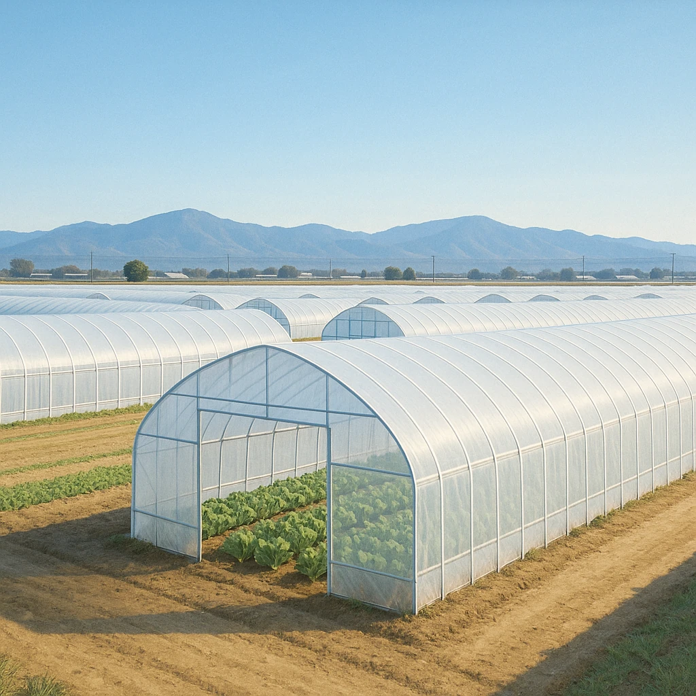

2-5
高知平野
あたたかさ＋ビニルハウスで
季節を早める
高知平野
冬でもあたたかい（太平洋側の気候）
ビニルハウス
なす
ピーマン
冬〜春に東京・大阪へ出荷

どんな農業か
⑦
施設園芸
農業
ビニルハウスなどの
施設
を使い、季節はずれの野菜・果物を栽培する農業。
どんな作り方か
なす・ピーマンの
⑧
促成
栽培
ふつうより
早く
育てて出荷する。なすは高知県が
生産量全国1位
。
ねらい
出回らない時期に
高く
売る
他の産地が作れない冬〜春に出荷できるので、高い値段で売れる。
★頻出
「ビニルハウスを利用する農業」は漢字6字、「早づくり」は漢字4字。2語をセットで。
第14章 中国・四国地方
SEED EDUCATION